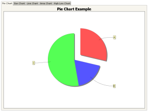

A collection of Pivot-JFree demos.
All demos require Java 6 or greater.
Signed jars could be used in some demo.
Note that Web Start Demos require that the JNLP file to be generated dynamically,
so here they need a Servlet Container (they are processed via jsp).
Charts DemoDemonstrates some Charts available in Pivot-JFree. |
 |